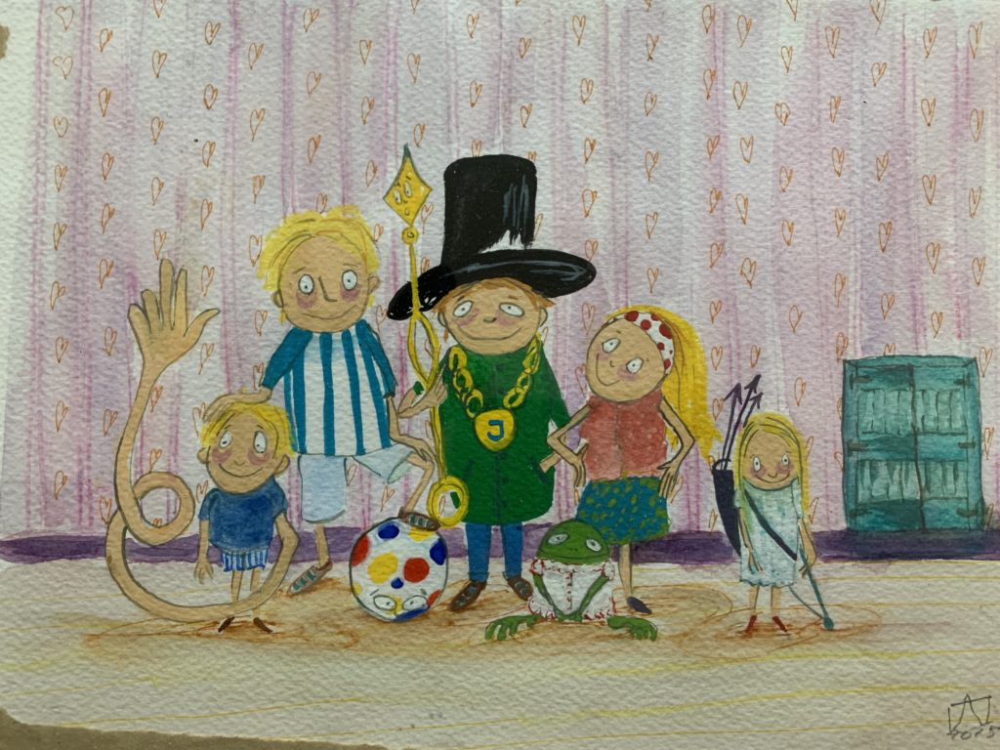

Opa Vertelt
Opa Vertelt (fantastische verhalen)
met illustraties van Lisette Wansink (Aristoscorpio Uitgeverij)
 Deze sprookjesachtige vertellingen hebben, net als in een klassiek sprookje, een gelukkig einde.
Deze sprookjesachtige vertellingen hebben, net als in een klassiek sprookje, een gelukkig einde.
Een kind wordt geconfronteerd met de afbraak van een oude watertoren en weet een oplossing te vinden voor dat oude waterkasteel. (welke hier integraal kan worden gelezen, met tekeningen van Lisette Wansink)
In het tweede verhaal loopt een eigenwijze grote wijzer van de wijzerplaat weg omdat hij zijn geluk wel eens op een andere plaats wil beproeven. En geluk vinden valt niet altijd mee. Dat weten we allemaal.
In het derde verhaal zien we dat een handicap met doorzettingsvermogen overkomen kan worden.
We zien een meisje in een grote tuin zich als Alice in Wonderland voelen. Maar ze moet leren zich niet te laten intimideren.
En tot slot zien we een meisje dat laat zien dat je door oefening en volharding haar doel weet te bereiken, maar daardoor ook inzicht in zichzelf krijgt.
In alle verhaaltjes zitten speciale signalen. En als de lezer die begrijpt krijgt die ook een beetje inzicht in wie hij of zij kan zijn.
